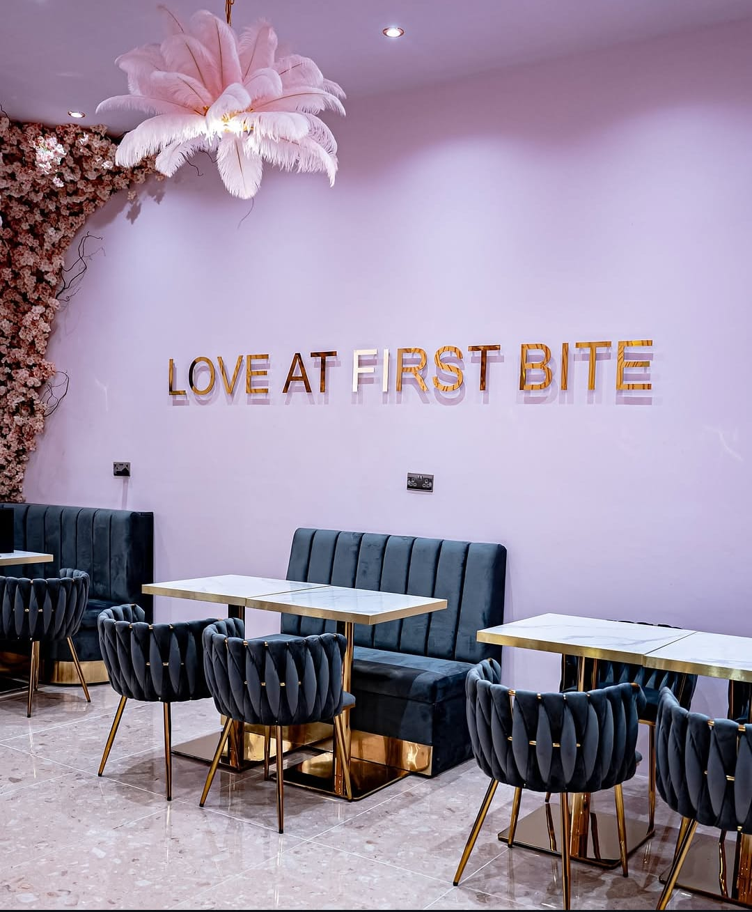

A promised date
A date was given when I asked about my pay.
Anonymous worker account
I worked at Izabella Cafe & Patisserie. The work itself was not the biggest issue I faced. The hardest part was having to keep chasing wages I had already earned.

Every time I asked about my salary, I was given a new date: one day, another day, then later again. The money did not arrive when it was promised.
It is frustrating to show up, do your job, and then be left chasing your own wages as if you are asking for a favour instead of something you have earned.
No worker should have to keep asking for their salary or be misled about when they will receive it.
A date was given when I asked about my pay.
When the first date passed, another date was given.
Each new promise raised expectations, but when the pay still did not arrive, it became harder to trust the next date.
Slogan
I am sharing this because people deserve transparency, and workers deserve respect.
I am not here to attack anyone. I am sharing my experience because delayed wages create stress, uncertainty, and disappointment for the people doing the work. Paying people on time is a basic form of respect.
Recognisable public handles
These links are included so people can identify the cafe being referred to in this personal account.